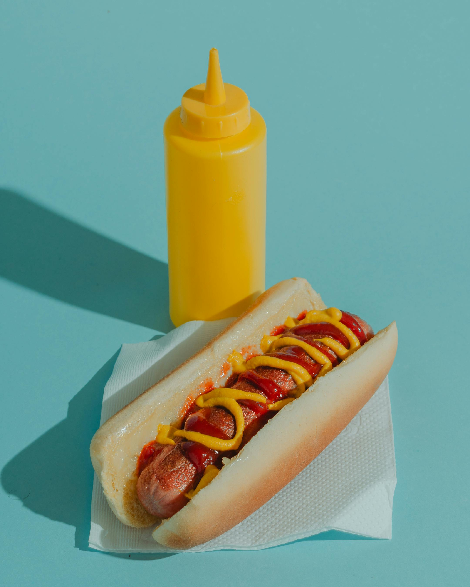

Como hacer Hotdogs a la Hubesa

Descripcion
Este es el tradicional hotdog de toda la vida, para aquellos que quieren comer algo rapido, pero con el sabor exquisito de un buen hotdog
Tiempo de duración: 15 minutos
Ingredientes:
- Salchicha
- Pan de hotdog
- Cebolla
- Aceite
- Catsup
- Mayonesa de Chipotle
- Mostaza
Pasos
- Precalienta tu sarten y pon una cucharada de aceite
- Corta finamente en pequeñas tiras la cebolla y viertela sobre el aceite
- Una vez hayan agarrado un color marroncito, pon junto a la cebolla la salchicha (Cuida que la salchicha no se queme)
- Mientras se dora la salchicha, aprovecha a untar la mayonesa y mostaza en ambos lados del pan
- Pon el pan unos 2 minutos sobre la sarten con tapa cerrada
- Saca todo de la sarten, pon la salchicha y la cebolla dentro del pan y ponle catsup
- Disfruta!
Inicio